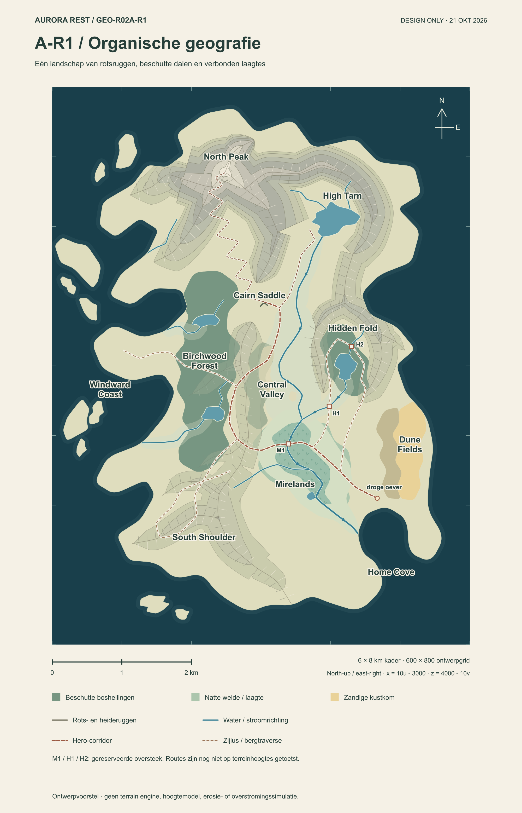
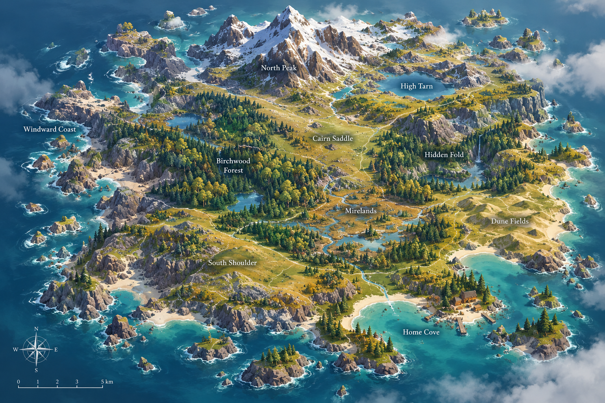
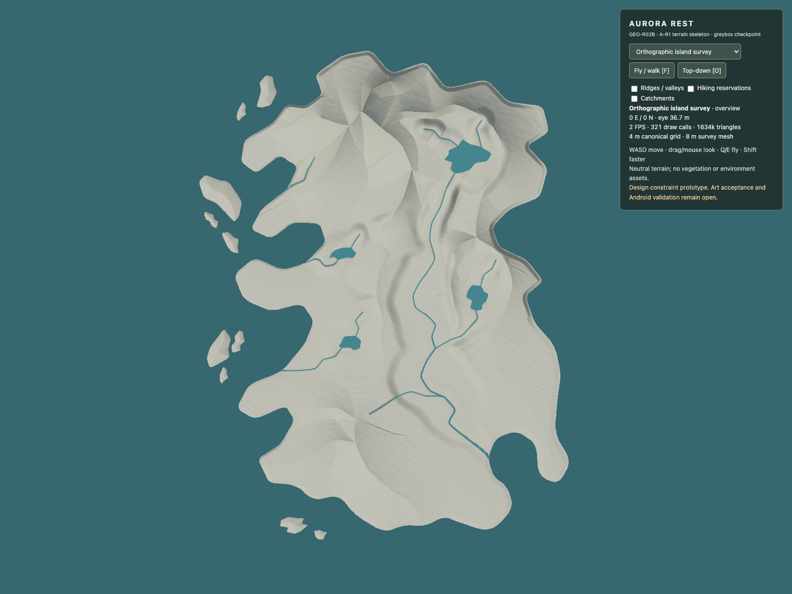
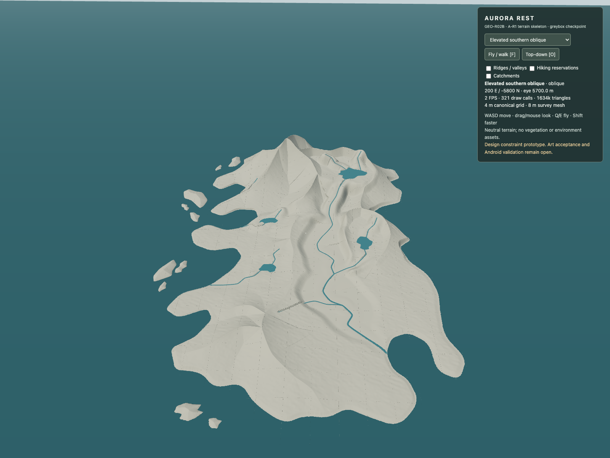
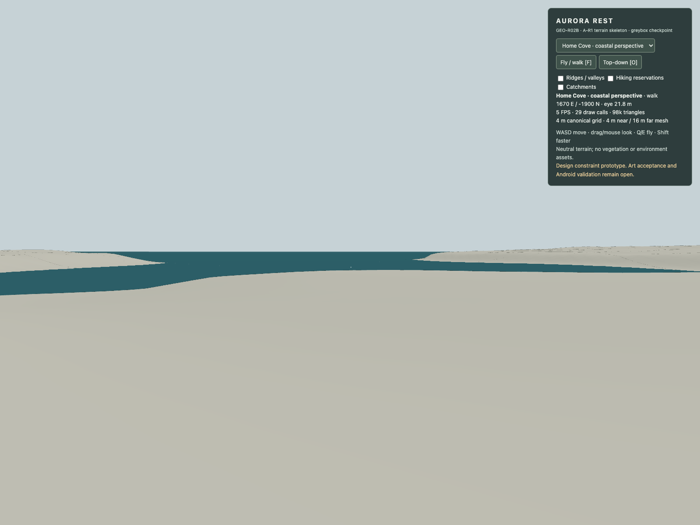
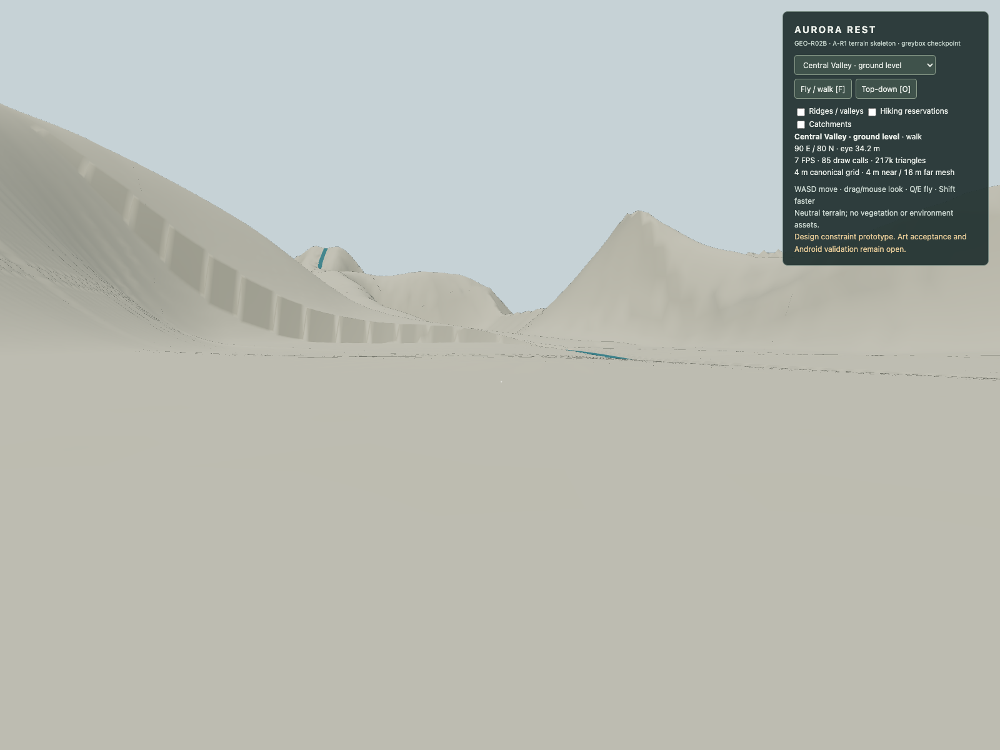
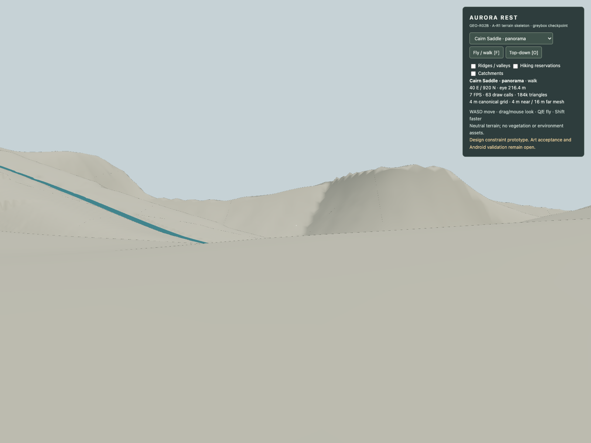
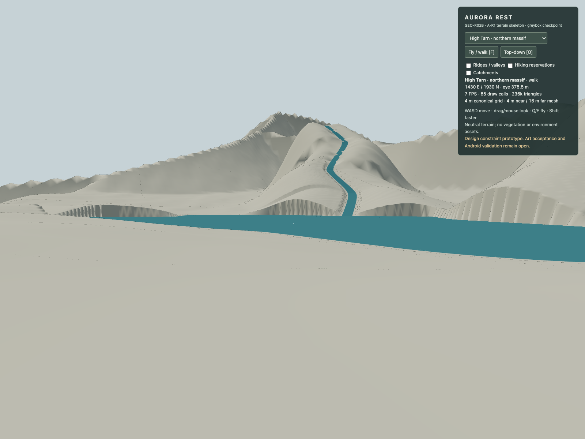
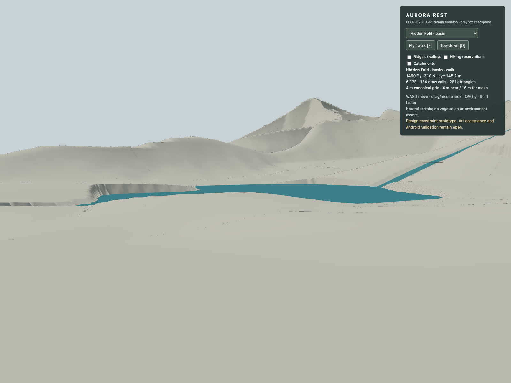
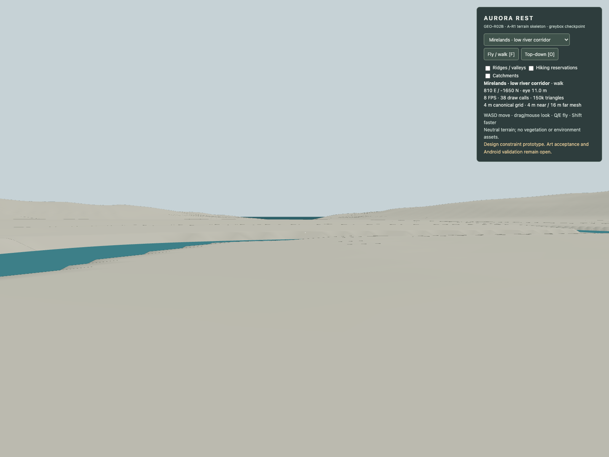

AURORA REST · GEO-R02B · CHECKPOINT 1
A-R1 in real 3D
Review checkpoint — terrain not accepted. Coastline and the authored structures are implemented. Drainage pockets, banks, walking approaches and terrain form still need correction. No merge, deployment or population.
Eight unretouched browser screenshots. Neutral terrain and simple water only. Ground captures use terrain contact at 1.75 m eye height. Software WebGL measurements are not physical Android performance evidence.

Approved A-R1 map · authored plan
Original concept illustration · artistic reference
Orthographic island survey
Elevated southern oblique
Home Cove · coastal perspective
Central Valley · ground level
Cairn Saddle · panorama
High Tarn · northern massif
Hidden Fold · basin
Mirelands · low river corridorCoast identity is retained; scenic equivalence to the illustration is not established. Read the review before approving any continuation.